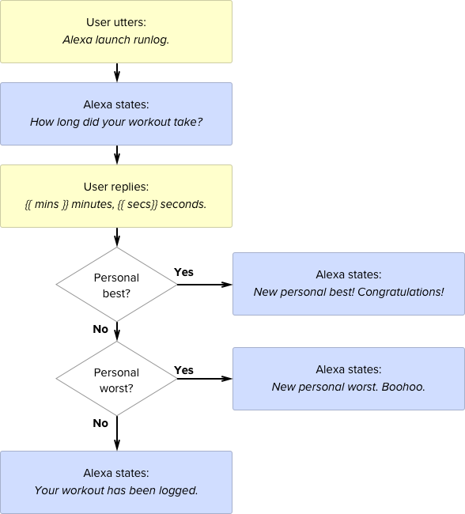

Running with Alexa Pt. 1
June 26 · 2016
TLDR: Learn a bit of Python and you can create a custom skill with Flask-ask in a breeze.
They yell down on us from their high horses: Designers shouldn’t code. Designers should pound the drum and developers should dance to the beat. Well, I've been dancing a secret proverbial tango with Python lately.
This is my first step outside of the Python Hello World sandbox. I recently came upon an Amazon Echo and I was curious to see if I could create my own skill. As much as I enjoy receiving flash briefings from NPR, I wanted to do more. I wanted Alexa to keep track of my daily run:
John Wheeler’s Flask-Ask framework makes it easy to create Alexa Skills. If you’re interested in creating your own skills I would highly recommend that you pony up the $15 and buy his Alexa tutorial videos. It’s an absolute bargain.
Creating the VUI flow
VUI is an acronym I learned last week, it stands for Verbal User Interface. Here's the VUI flowchart for the Run Log skill:

This is a simplistic VUI, but it will suffice for our proof-of-concept purposes.
Setting up the development environment
Follow John's tutorial to get up and running with Flask-Ask:
My IntentSchema and SampleUtterances are very simple for this proof-of-concept skill. I use Amazon's own AMAZON.DURATION slot type that makes it possible for the user to utter a workout duration and easy for us to parse that duration:
{
"intents": [
{
"intent": "DurationIntent",
"slots": [
{
"name": "duration",
"type": "AMAZON.DURATION"
}
]
}
]
}
Response template
Let me a reveal a secret here: Alexa is not a personal assistant. Alexa is a voice terminal robot and we have to stand on the edge of the scene and feed her lines to create the illusion of dialogue. These lines live in the Jinja template:
welcome: "How long did your workout take?"
welcome_reprompt: "I did not catch that. How many minutes did your workout take?"
run_logged: "OK, I have logged {{ minutes }} minutes, {{ seconds }} seconds."
personal_best: "{{ minutes }} minutes, {{ seconds }} seconds. That is a new personal best. Congratulations tiger!"
personal_worst: "{{ minutes }} minutes, {{ seconds }} seconds. That is a new personal worst. Please up your game."
This is how the responses map to our VUI flowchart:

Adding some audio flavor
Plain text strings can get you a long way, but for more advanced speech features SSML is required. SSML is a markup language that is tailored to the creation of synthetic speech, it provides some impressive features like phonemic pronunciation. Very handy if you want to mention Arsenal's goal-keeper Wojciech Szczęsny in your skill.
I used the audio tag in my skill, to play a sad trombone when you log a personal worst and an upbeat sax riff if you log a personal best:
personal_best: <speak><audio src="https://s3-us-west-1.amazonaws.com/run-log/best.mp3" />{{ minutes }} minutes, {{ seconds }} seconds. That is a new personal best. Congratulations tiger!</speak>
personal_worst: <speak><audio src="https://s3-us-west-1.amazonaws.com/run-log/worst.mp3" />{{ minutes }} minutes, {{ seconds }} seconds. That is a new personal worst. Please up your game.</speak>
This proved more difficult than expected, Alexa doesn't take any old mp3. I had to encode the mp3 in ffmpeg using these parameters:
ffmpeg -i input.mp3 -b:a 48k -ar 16000 output.mp3
Skill logic
The logic lives in the alexa-runlog.py script. The launch decorator determines what Alexa should do when the skill is launched:
@ask.launch
def launch():
welcome_msg = render_template('welcome')
return question(welcome_msg)
The intent decorator determines what happens after the user has replied with the run duration:
@ask.intent("DurationIntent", convert={'duration': 'timedelta'})
'''
Parsing and writing the duration to a CSV file…
'''
if(personal_best > duration):
return statement(personal_best_msg)
if(personal_worst < duration):
return statement(personal_worst_msg)
else:
return statement(logged_msg)
Next steps
This is a crude prototype. There's many tasks to complete before the skill is ready for public consumption:
- Host the skill on S3.
- Authenticate the user with Amazon.
- Store the run data in an actual database.
- Show information in the Alexa app.
- Improve the voice design as per Amazon's guidelines.
- Make it possible to ask for personal best and worst.
- Create a simple website that displays Run Log data.
All to come in Running with Alexa Pt. 2.